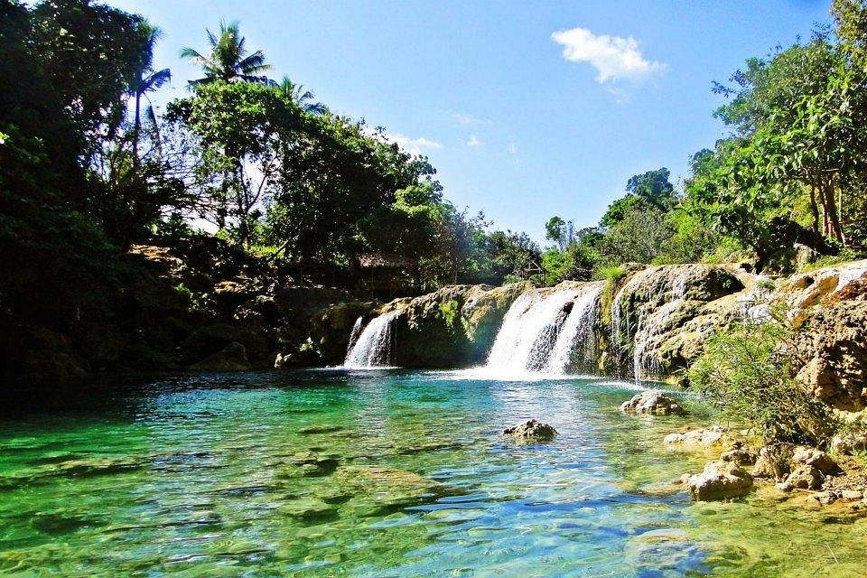

Bolinao Falls is a stunning natural attraction located in Bolinao, Pangasinan, Philippines. It consists of three distinct waterfalls, each offering its own unique features and experiences.
Bolinao Falls is a natural beauty located in Bolinao, Pangasinan, Philippines. While specific historical information about Bolinao Falls is limited, it is believed that the falls were formed by the flowing waters from the rivers of elevated lands, eventually cascading down to a lower elevation and creating the natural wide basin below. The name "Bolinao Falls" is derived from the town's name, Bolinao, and the falls themselves.
In addition to its natural beauty, Bolinao is known for its pristine beaches, stunning rock formations, historical church, lighthouse, river, campsites, and waterfalls. Bolinao Falls 1, 2, and 3 are clusters of beautiful waterfalls located in Barangay Samang Norte, Bolinao, Pangasinan.